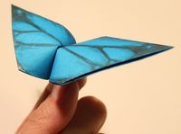
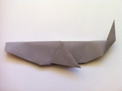

Origami Designs
Bored? Wanna do something fun and engaging? Why not do some origami? Our website has some origami designs that you can try out if you're a beginner. Have fun!!
About Us
Follow Us
Jumping Frog

Interesting facts about a frog
- There are over 5,000 species of frog.
- Frogs don't need to drink water as they absorb it through their skin.
- A frog's call is unique to its species, and some frog calls can be heard up to a mile away.
- Some frogs can jump over 20 times their own body length; that is like a human jumping 30m.
Crane

Interesting facts about a crane
- A crane is a type of tall wading birds from the family Gruidae
- There are 15 species in 4 genera.
- The tallest is the sarus crane, Grus antigone, which can grow to a height of up to 1.8 m (5.9 ft).
- The earliest fossils of cranes were discovered in North America.
Flapping butterfly

Interesting facts about a butterfly
- Butterfly wings are transparent
- Butterflies taste with their feet
- Butterflies often live just a few weeks
- Butterflies are nearsighted but can see colors
Whale

Interesting facts about a whale
- Male humpback whales found in U.S. waters sing complex songs in winter breeding areas in waters near Hawaii, in the Caribbean, and elsewhere that can last up to 20 minutes and be heard miles away.
- The blue whale is the largest animal that ever lived and can grow to 90 or more feet and weigh as much as 24 elephants! That’s more than 330,000 pounds (150,000 kg).
- Killer whales are highly social and often travel in groups that are matrifocal—a family unit focused or centered on the mother.
- Gray whales make one of the longest annual migrations of any mammal: they travel about 10,000 miles (16,000 km) round trip!
That’s all fellas! Hope you had a nice time folding those sheets of origami paper!
Can't get enough? Try these websites!
Origami Way
Paper Kawaii